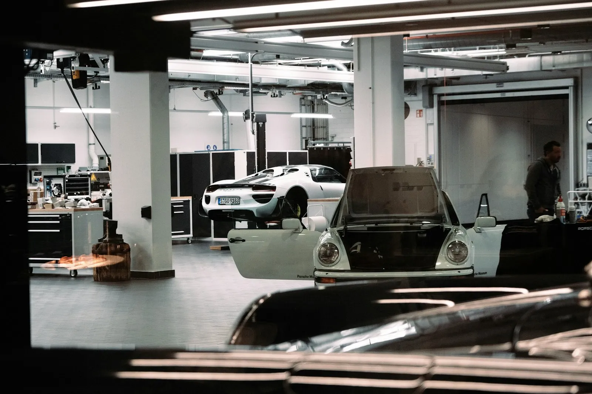
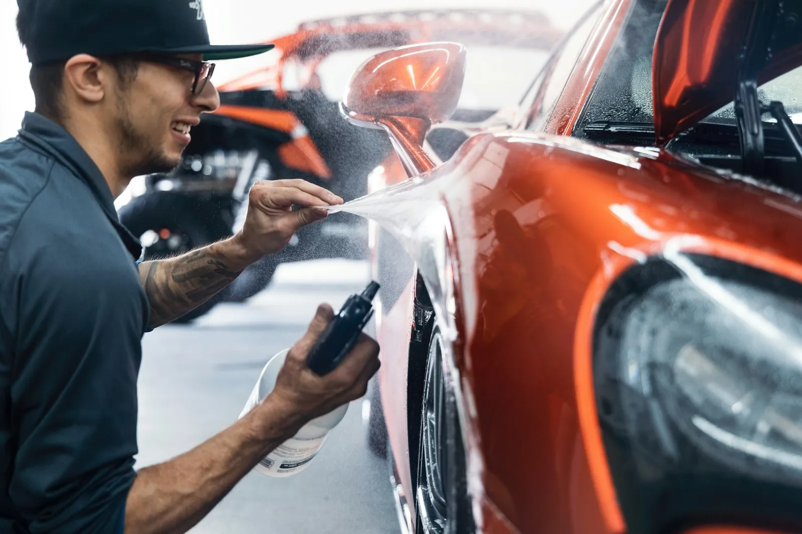

Schadeherstel
Na een aanrijding of een tik bij het parkeren.
Carrosserie Arickx herstelt al sinds 1997 schade aan wagens in Tielt en omstreken. Van een kras op de bumper tot een deur die vervangen moet worden: het wordt hersteld, gespoten en afgewerkt zodat je er niets meer van ziet.

Schadeherstel en spuitwerkEen lak bestaat uit verschillende lagen. Hoe dieper de schade, hoe meer werk. Kies wat je ziet, dan zie je welke lagen geraakt zijn en wat er waarschijnlijk moet gebeuren.
Alle carrosseriewerk aan je wagen, van klein tot groot. Je hoort vooraf wat er gebeurt en wat het kost.
Na een aanrijding of een tik bij het parkeren.

Gebarsten of ingedeukt: herstellen of vervangen.

In de juiste kleur, met een strakke afwerking.

Polijsten tot de lak overal gelijk glanst.
Carrosserie Arickx werd in 1997 opgericht en wordt vandaag geleid door Daniël en Hein Arickx. Een zaak waar je weet wie aan je wagen werkt, en waar je met een gerust hart je sleutels achterlaat.

Bel even of stuur een mail met een paar foto's van de schade. Je krijgt zo snel mogelijk antwoord.
Zit hij enkel in de blanke lak, dan lukt dat vaak met polijsten. Gebruik de tool hierboven voor een eerste idee, of stuur een foto.
Ja. Na het bekijken van de schade weet je wat het kost, en dan beslis je.
Neem het aanrijdingsformulier en de gegevens van je verzekering mee. Dan bekijken we samen hoe je het best te werk gaat.
Bel even op 051 40 16 47, dan spreken we een moment af dat jou past.
DIEen woordje uitleg van Stijn
Ik maakte deze demo voor jullie om te tonen wat er kan. Na een kort gesprek maak ik er iets veel persoonlijkers van, helemaal naar jullie wens.
Vrijblijvend. Ik kom langs of we bellen.
Op maat, op jullie eigen domein.
Geen voorschot. Jullie betalen pas als alles klaar is.
Hosting, domeinnaam en kleine wijzigingen, zoals nieuwe openingsuren.
Omdat een voorbeeld meer zegt dan een mail. Zo zien jullie meteen wat er kan, en het kost jullie niets.
Nee. Het gesprek is vrijblijvend. Vinden jullie het niks, dan is het daarmee gedaan.
Na ons gesprek staat jullie site binnen 10 tot 14 dagen online.
Zeker. Jullie domeinnaam kan gewoon blijven, de nieuwe site komt in de plaats van de oude.
Nee, dat doe ik op basis van ons gesprek. Eigen foto's zijn mooi meegenomen, maar niet nodig om te starten.